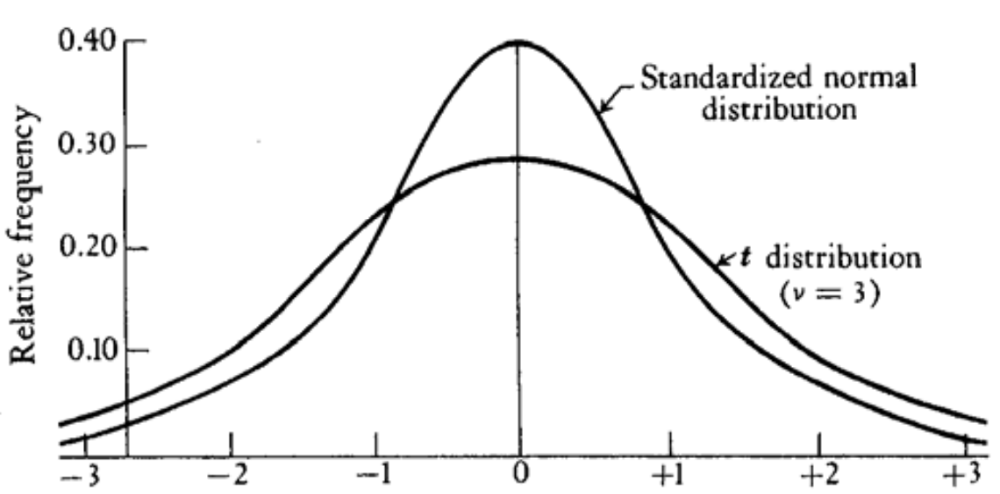
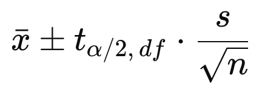

In reality, the entire population data is not available. One must rely on observing a subset (sample) of the population to estimate population parameters.
When understanding the sampling, it is very important to clearly grasp subtle difference in notations.
Suppose we want to take a sample of n independent observations in order to determine the characteristics of a random variable X:
n is the sample size, that is the number of observations from X in one sample..
Big X represents a random variable.
Big Xᵢ represents a random variable whose process is to “observe single value samples” from X.
Big X̄ represents a random variable of means of those random samples Xᵢ.
It is an estimator of the population mean.
Formula notation:
X̄ = (X₁ + X₂ + ... + Xₙ) / n = μ̂
As a comparison, mean of a sample is:
x̄ = (1/n) * Σxᵢ where xᵢ is a subset (size of n) of all possible x's
Similarly for variance:
Big S² represents the estimator:
S² = (1/n-1) * Σ(Xᵢ² - X̄)²
= (1/(n-1)) * E(Σ(Xᵢ² - 2XᵢX̄ + X̄²))
= (1/(n-1)) * E(ΣXᵢ² - Σ2Xᵢx̄ + ΣX̄²)
= (1/(n-1)) * E(ΣXᵢ² - 2nX̄² + nX̄²)
= (1/n-1) * (ΣXᵢ² - nX̄²)
= σ̂²
Small s² represents a variance of a sample:
s² = (1/(n-1)) * (Σxᵢ² - nx̄²) where xᵢ is a subset (size of n) of all possible x's
As a comparison to X̄ and S², E(X) and V(X) represent for the whole population
Sample mean and sample variance only concern values from a sample.
E(X) and V(X) are for the whole population.
E(Xᵢ) = E(X) = μ
V(Xᵢ) = V(X) = σ²
Note the ^ used for sample mean μ̂ and variance σ̂². It is common to use a ^ over a population parameter to represent the corresponding sample estimate.
Obviously, taking different samples yeilds different x̄. Therefore X̄ is itself a random variable, which has its own mean and variance:
E(X̄) = E((X₁ + X₂ + ... + Xₙ) / n)
= (E(X₁) + E(X₂) + ... + E(Xₙ)) / n
= μ
V(X̄) = V((X₁ + X₂ + ... + Xₙ) / n)
= V(X₁ + X₂ + ... + Xₙ) / n²
= (V(X₁) + V(X₂) + ... + V(Xₙ)) / n² [Xᵢ are independent, check rule#15]
= σ² / n
StdDev(X̄) = σ / sqrt(n) also known as the true standard error of the mean
The central limit theorem (CLT) is one of the most important results in probability theory. It states that, under certain conditions, the sum of a large number of random variables is approximately normally distributed.
Suppose the X₁, X₂, ... Xₙ random variables that are independent and identically distributed
(iid) with expected mean and variance E(Xᵢ) = μ and V(Xᵢ) = σ².
Then the random variable sample mean X̄ = (X₁ + X₂ + ... + Xₙ) / n is normally distributed with
E(X̄) = μ and V(X̄) = σ² / n.
Note the original random variables X₁ are not necessarily normally distributed.
Intuitively, as more sample size increases (i.e. more observations from one sample), the sample mean would get closer to the true mean. As a result the sample means are getting closer. Their variance becomes smaller (as n becomes larger).
The reason we use n-1 rather than n is so that the sample variance will be an unbiased estimator of the population variance σ². That is:
The sample variance is the formula for a particular sample:
s² = (1/(n-1)) * (Σxᵢ² - nx̄²)
Now we define an estimator S² for s² by replacing variables by estimators:
S² = (1/(n-1)) * (ΣXᵢ² - nX̄²)
Xᵢ is an unbiased estimator for population X, thus xᵢ.
X̄ is an unbiased estimator for mean of population X, thus x̄.
Now need to prove S² is an unbiased estimator of the population variance σ², i.e. E(S²) = σ²
Proof:
(1) From population variance definition σ² = E(X²) - μ², we have E(X²) = σ² + μ²
(2) E(Xᵢ²) = E(X²) = σ² + μ²
(3) E(X̄²) = V(X̄) + E(X̄)²
= σ² / n + μ²
then:
E(S²) = E((1/(n-1)) * (ΣXᵢ² - nX̄²))
= (1/(n-1)) * E(ΣXᵢ² - nX̄²)
= (1/(n-1)) * (ΣE(Xᵢ²) - nE(X̄²))
= (1/(n-1)) * (n(σ² + μ²) - n(σ² / n + μ²))
= σ²
If X ~ N(μ, σ²) , then:
X̄ ~ N(μ, σ²/n)
Z = (X̄ - μ) / (σ / sqrt(n)) ~ N(0, 1)
What if X is not normally distributed?
According to the Central Limit Theorem, regardless of the shape of the parent population, the distribution of X̄ approaches N(μ, σ²/n) if:
The Z transformation above requires μ and σ are known. In reality, much more common situation is where both are unknown. If we use sample variance s to replace σ, then it becomes a T transformation, that produces a variable with a T distribution:
T = (X̄ - μ) / (s / sqrt(n)) ~ Tₙ₋₁
σ / sqrt(n) true standard error of the mean
s / sqrt(n) estimated standard error of the mean
Properties:
Shape is determined by parameter degrees of freedom: df = n -1
E(T) = 0
The T distribution is symmetric
As n approaches infinity, T ~ N(0, 1). 120 is a pretty good approximation of infinity while 30 is not too bad.

The T transformation is appropriate whenever the parent population is normally distributed and σ is unknown. Even if the parent population is not normally distributed, T will often work ok.
Population parameter estimates from samples are not identical to population parameter due to sampling error. Because of the estimate inaccuracy, we need to specify a range of values in which the population parameter is likely to be. This is when the T distribution comes in handy as normal distribution cannot be used because population variance σ is unknown.
Definition:
α = the probability the population parameter is outside of the confidence interval
1 - α = the probability the population parameter is inside the confidence interval
The 100(1 - α)% confidence interval will include the true value of the population parameter
with probability 1 - α.
Example: α = 0.05
(1) 95% of the time, the 95% confidence interval will include the true population parameter.
(2) 2.5% of the time, the true population parameter is larger than the 95% confidence
interval upper limit.
(3) 2.5% of the time, the true population parameter is smaller than the 95% confidence
interval lower limit.
Based on the T transformation, we have the formula for confidence interval:
